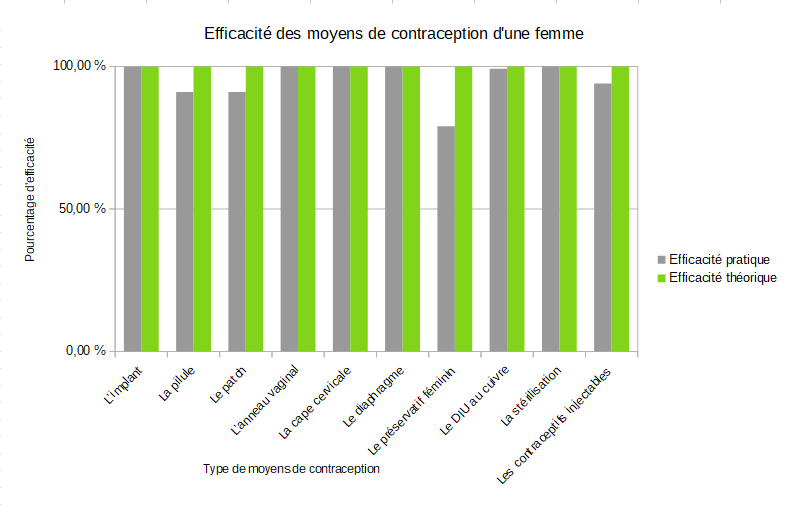

Définition: Selon l’OMS, les moyens de contraception sont « l'utilisation d'agents, de dispositifs, de méthodes ou de procédures pour diminuer la probabilité de conception ou l'éviter ». Plus simplement, les moyens de contraception permettent de ne pas tomber enceinte lors des rapports sexuels.
Différents types de moyens de contraceptions: Les plus connus sont le préservatif masculin efficace à 98% et la pilule chez la femme efficace à 99.7%. Cependant ce ne sont pas les seuls, il existe l’implant, le DIU hormonal, le DIU au cuivre, les contraceptifs injectables, l’anneau vaginal, le patch, le diaphragme, le préservatif féminin, la cape cervicale et les spermicides. Le patch et l’anneau vaginal sont autant efficaces que la pilule. Les moyens de contraceptions sont prescrits au moment des premiers rapports sexuels chez la jeune fille. Cependant de nombreuses jeunes filles n'ont pas accès ce qui engendre des grossesses à l'adolescence.
Définition: La prévalence de la pilule représente le nombre de femmes qui prennent la pilule. La pilule est une contraception orale féminin, sous la forme de comprimés et qui se prend tous les jours. La pilule est un des moyens de contraceptions les plus courants chez les femmes. Cette contraception permet à la femme de choisir si elle veut tomber enceinte ou non après un rappport.On constate dans un premier temps que nous n’avons pas toutes les données pour chaque pays chaque année. Cela signifie pas qu’aucune femme ne prends la pilule dans ce pays, c’est tout simplement que les données n’ont pas été donnés. Pour comparer et voir si ce pourcentage de femmes qui prend la pilule augmente ou diminue au fur et à mesure des années, on va prendre 3 dates. (1984,2000 et 2010)

En 1984, on remarque qu’il y a très peu de données sur le pourcentage de femmes qui prennent la pilule. Concernant les pays dont on possède les données, on remarque dans un premier temps que c’est beaucoup de pays africains. Cependant c’est aussi eux qui possèdent de très faibles pourcentages. En 1984, au Kenya, 17% des femmes âgées de 15 à 49 ans prennent la pilule. Les pays africains sont ceux qui ont les plus faibles pourcentage ce qui explique que sa population ne cesse d’augmenter. On remarque aussi qu'au Bangladesh en 1984, seulement 19.10% des femmes prennent la pilule. C’est le Canada qui possède le pourcentage le plus élevé pour cette année. 73,10% des femmes canadiennes âgées de 15 à 49 ans prennent la pilule. Cela se traduit par le taux de fertilité qui représente le nombre de naissances par femme et par pays. Plus le pourcentage de la prévalence de la pilule est élevé, plus le nombre de naissances est faible. Par exemple, le Canada a un taux de fertilité égal à 1.65 car plus de la moitié des femmes de son pays prennent la pilule. Et au contraire, si le pourcentage de femmes qui prennent la pilule est faible comme c’est le cas au Kenya alors le nombre de naissances par femme est élévé, 7.042 pour le Kenya en 1984.
En 2000, on a beaucoup plus de données sur les pays développés contrairement à l’année 1984. Cependant la tendance n’a pas changé, les pays africains ont de faibles pourcentages, en Gambie, seulement 9.5% des femmes âgées de 15 à 49 ans prennent la pilule ce qui se traduient par un taux de fertilité élevé, 5.879. Concernant le Bangladesh, ce pourcentage a fortement augmenté entre 1984 et 2000. En 2000, c’est 54.30% des femmes qui prennent la pilule, cela représente la moitié des femmes de cette catégorie. Cela peut s’expliquer par l’augmentation de la communication des moyens de contraceptions au sein de la population, une meilleure accessibilité à ces ressources… Cela a un impact sur le nombre de naissances par femmes, il était de 5.698 en 1984 et en 2000 il est de 3.169. Le nombre de naissances par femmes a fortement diminué. Concernant les pays développés comme la France, plus de 80% des femmes prennent la pilule ce qui se traduit par un nombre de naissances par femmes égal à 1.89. En Chine, en 2000, 83,80% des femmes âgées de 15 à 49 ans prennent la pilule.
En 2010, on remarque que globalement le nombre de femmes qui prennent la pilule ne cesse d’augmenter dans quasiment tous les pays. Pour les pays développés le pourcentage est supérieur à 50% (89.10 pour la Chine, 78% pour la France, 73.20 pour l’Irlande et 76.40% pour les Etats-Unis).Dans ces pays, le nombre de naissances par femmes est contrôlé il se trouve entre 1.6 et 2.02. Bien que le nombre de femmes dans les pays africains prennent de plus en plus la pilule, les chiffres restent très bas. En 2000, en Gambie, 9.5% des femmes prennent la pilule, en 2010 c’est 13.30% des femmes. On constate une augmentation mais le nombre reste très faible.Cela provoque un nombre de naissances très élevé. De plus, dans les pays africains, les femmes ne vivent pas très longtemps donc ce sont majoritairement les jeunes filles qui ont besoin de ce moyen de contraception.
Concernant les mères adolescentes, les données commencent à partir de 1985 et elles sont très faibles concernant les pays développés comme la France.En 1996, par exemple, au Brésil, 18% des jeunes femmes âgées de 15 à 19 ans ont des enfants ou sont actuellement enceintes. On remarque aussi que le taux de fécondité est élevé dans les pays d’Amérique du Sud. En 2011, en Angola, 42,5 % des jeunes femmes âgées de 15 à 19 ans ont des enfants ou sont actuellement enceintes. 10,5 % de sa population sont des jeunes filles âgées de 15 à 19 ans. Le taux de fertilité est très élevé dans les pays du continent africain. Sur 85 pays qui ont été recensés pour les mères adolescentes, il y a 40 pays du continent africain sachant que le continent africain compte 54 pays donc quasiment la totalité possèdent des mères adolescentes. De plus, nous avons constaté que les pays où un faible pourcentage de femmes prennent la pilule se traduit par un nombre élévé de naissances par femme car elles ne peuvent pas controler lors des rapports sexuels. De même, c’est aussi ces pays qui possèdent beaucoup de mères très jeunes.
Besoins en contraception sans réponse (% de femmes mariées de 15 à 49 ans)
On constate que les besoins en contraception sont forts, surtout pour les pays africains. Cependant, cette carte montre que les besoins en contraception ne sont souvent pas entendus par les autorités. En 2014, c'est presque 14 pays africains dont les besoins en contraception ne sont pas entendus. En Libye, 40,20% des femmes de 15 à 49 ans ont besoin de contraception sans réponse.
Il faut bien comprendre que dès l'âge de 15 ans les jeunes filles du monde entier sont inégales face aux soins. Dans les pays développés, la majorité des femmes prennent la pilule de contraceptive ce qui permet de contrôler le nombre de naissance et aussi l’âge pour tomber enceinte. Tout est lié si quasiment la totalité des femmes d’un pays prend la pilule alors le nombre de mères adolescentes est très faible et donc les besoins sans réponse à la contraception sont faibles comme c’est le cas en France.
created with
Best Free Website Builder .